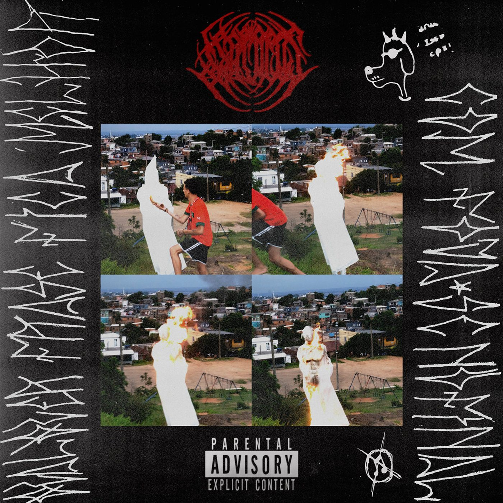
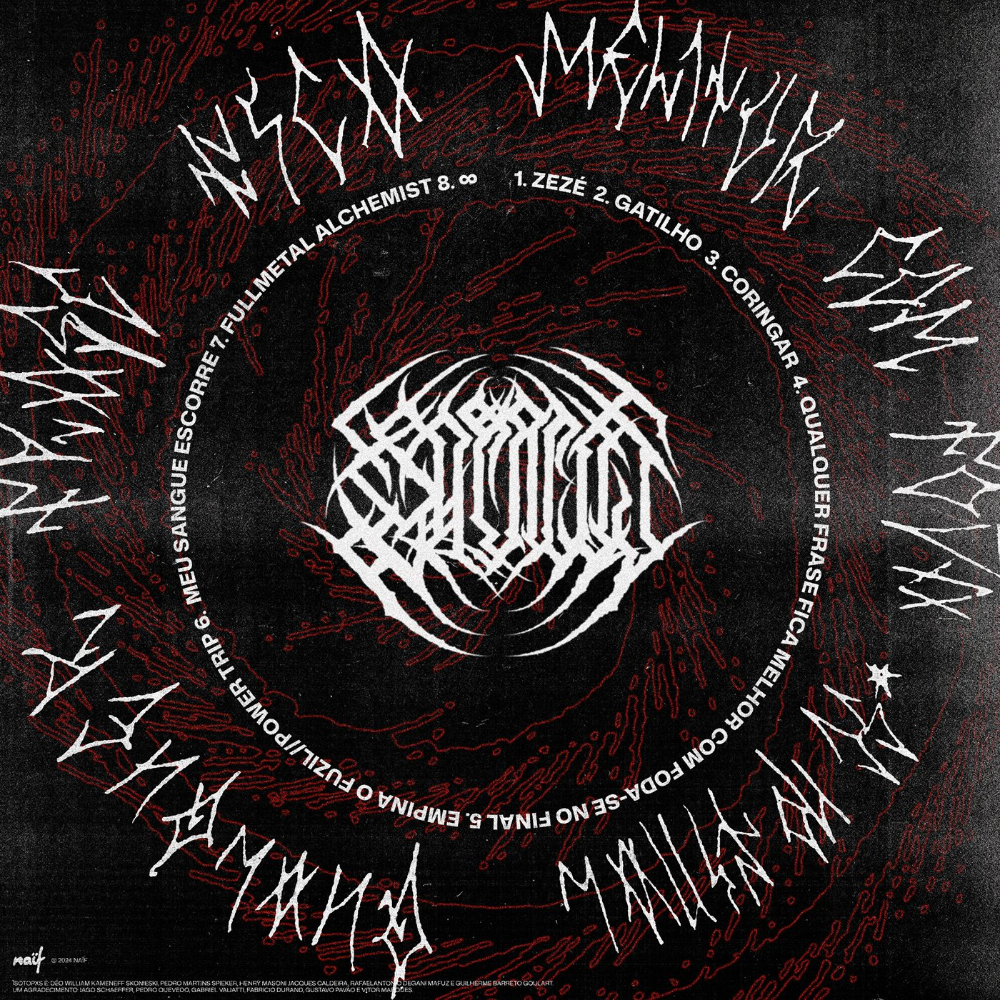
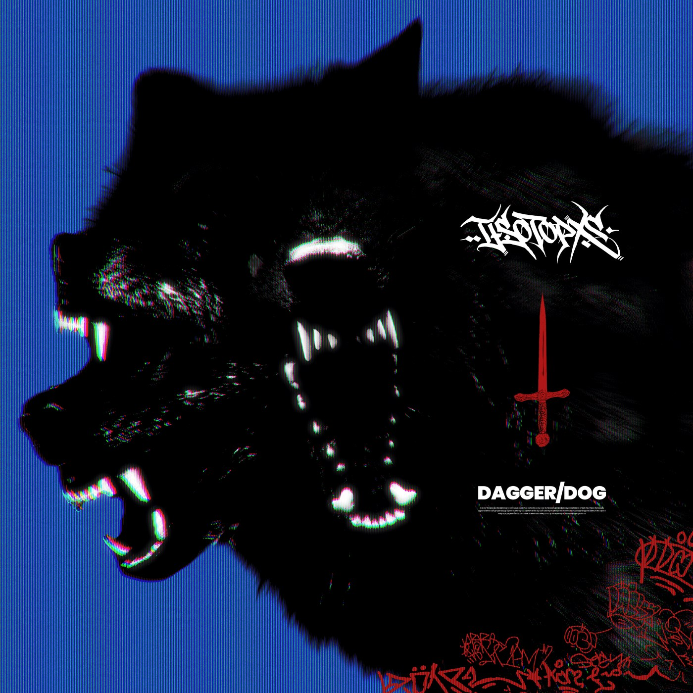

Faixas do álbum qualquer frase fica melhor com foda-se no final e dos singles mais recentes de ISOTOPXS.
Álbum de estreia


[Intro]Present day
Present time
Hahahahahahaha
[Verso]Gira, gira, gira das alma'
Tudo o que eu queria era te ver girar de novo
E se já não bastasse eu não te olho mais no olho
Do jeito que a gente se olhava no passado
Eu te peço desculpa
É que a guerra, o ódio e a mágoa me mudaram
As trincheiras da mente não são fáceis de lidar
Internalizando todas coisas que eu falo
Eu sei que um dia tu vai mudar
É que é orgulho, não tristeza
Um dia eu volto pro morro
"Melhor amigo", era assim que ela me chamava
Tudo não tá perdido, eu morri enquanto clareava
Minha voz tava escondida debaixo daquela marra
A marra que eu puxei de ti, os olhos que eu puxei de ti
Agora eles sabem que eu saí de lá
Me persegue à noite na esperança de tentar me derrubar
Mas não botam contra porquê nós é filho de Bará
[Intro: Spieker]Um, dois, três, quatro!
[Verso 1: Déo Willy]Teu rosto me assombra há semanas
Eu juro que eu sempre quis te compreender
Quanta graça em me trazer tantas lembranças
Que eu me esforço pra esquecer
[Pré-Refrão: Déo Willy & Spieker]Mas já não dá tempo
O silêncio é sábio e sincero
Já não tenho medo
Pois relevo toda a forma de expressão
(Que a tua desilusão)
[Refrão: Déo Willy & Spieker]Traz pra atormentar minha paz
Diga que não posso mais te ver
Ou pare de chamar pra conversar
Pois meu gatilho é você
[Interlúdio]Essa daqui é pica, hein?
[Verso 2: Déo Willy & Spieker]Erros constantes me fizeram chorar
O tempo passa e eu já não posso mais consertar
Tu não me dá trégua, fez eu me afogar
Ouvindo o barulho eu só quero gritar
Que a saudade apodrece o meu coração
A minha mente te procura dentro da escuridão
E eu me rendo a toda forma de expressão
(Que a tua desilusão)
[Refrão: Déo Willy]Traz pra atormentar minha paz
Diga que não posso mais te ver
Ou pare de chamar pra conversar
Pois meu gatilho é você
[Pós-Refrão: Déo Willy & Spieker]Traz pra atormentar minha paz
(Traz pra atormentar minha paz)
Diga que não posso mais te ver
(Não posso mais te ver)
Ou pare de chamar pra conversar
Pois meu gatilho é você, yeah!
[Intro: Sammy Harbors]This is the final straw!
I had with all you freaking trolls!
All you freaking haters, all you freaking Sonic—
Freaking Sonic bad freaks!
[Verso 1: Déo Willy]Traçando rotas de fuga
Eu não pretendo mais voltar
A minha vida é tão vazia
E eu só queria descansar
A minha mente escreve muito
Eu sou refém do silêncio
Só sei que eu já fiz de tudo
Tem muita coisa aqui dentro
O suicídio me consome
Eu não consigo mais dormir
Acostumado com a fome
Eu só queria deixar de existir
Há pouco tempo eu era frio como o gelo
Deve ser meu ascendente em Áquario
Eu tenho medo até de me olhar no espelho
Eu me sinto solitário
[Refrão: Déo Willy]A terapia ajuda a me expressar
O que eu vi naquele inferno me fez coringar
E eu não consigo mais chorar
Meus sentimentos retraídos
Eu não sei mais conviver com a dor
Não tenho mais nenhum amigo
[Verso 2: Tsuki]Trancado dentro do meu quarto
Só eu e minha depressão
Cartelas, drogas e garrafas
Espalhadas pelo chão
Esse ócio me come vivo
Eu não sei mais o que fazer
Não sirvo pra porra nenhuma
Muito menos pra morrer
Minhas memórias sempre buscam
Tudo de errado que eu fiz
Lembrando de você
E quando eu era mais feliz
Por que isso aconteceu?
O que eu tinha que fazer?
Isso tá me deixando louco
Eu não suporto mais
[Interlúdio: Sammy Harbors]This is the final straw!
[Refrão: Déo Willy & Tsuki]A terapia ajuda a me expressar
O que eu vi naquele inferno me fez coringar
E eu não consigo mais chorar
Meus sentimentos retraídos
Eu não sei mais conviver com a dor
Eu só me sinto mais fudido
[Saída: Spieker]Os becos e falsas saídas
Me empurram pra acabar
Um último golpe de sorte
Pro meu corpo esfriar
Não sei o que faço da minha vida
Nem sei se quero saber
Entre a vida e a morte
Eu só não quero mais sofrer
[Verso 1: Déo Willy]Quem ia acreditar que isso ia colar?
Que os moleque' do morro um dia ia virar?
Já não pode parar nosso suado progresso
Nem o cuzão do Bolsonaro com todo retrocesso
Ver as quebrada vencendo, pelo jeito, incomoda
Ver os cria', lá do morro, de pisante daora
A meta é dobrar a meta, e eu sempre vou alcançar
A minha tropa tá pesada, não tenta segurar
[Refrão: Déo Willy, Déo Willy & Spieker]Ouvindo Rage Against, microondas no racista
Portando a peita da 12, é o Inter antifacista
Testa tropa dos Isotopxs que eu pego a parafal
Qualquer frase fica melhor com foda-se no final
Ouvindo Rage Against, microondas no racista
Portando a peita da 12, é o Inter antifacista
Testa tropa dos Isotopxs que eu pego a parafal
Qualquer frase fica melhor com foda-se no final
[Verso 2: Déo Willy & Spieker](Automático) De Civic a 100 por hora
(Problemático) Fumando muita maconha
(Avisado) E se tentar contra, vai se fuder
A minha tropa é a mais cara, portando Cartier
10k no meu bolso, 100g na minha bag
Vadia surta quando bate olho no meu swag
Pinta de mafioso, cheiroso e tatuado
Uma draco em cada coldre, se testar, tu sai furado
Vizinho Bolsominion sempre tenta embaçar
Mas a Sesh é baixada, eu me drogo pra criar
Maconha tá bolada, na blunt maracujá
E a guitarra tá na bala pra Ref nóis estourar'
[Refrão: Déo Willy, Déo Willy & Spieker]Ouvindo Rage Against, microondas no racista
Portando a peita da 12, é o Inter antifacista
Testa tropa dos Isotopxs que eu pego a parafal
Qualquer frase fica melhor com foda-se no final
Ouvindo Rage Against, microondas no racista
Portando a peita da 12, é o Inter antifacista
Testa tropa dos Isotopxs que eu pego a parafal
Qualquer frase fica melhor com foda-se no final
[Interlúdio: Déo Willy & DJ Marquinho]Bota na cabe—
Bo—Bo—Bo—Bota na cabeça
Bota—Bota na cabeça que estilo não é marra
E aí, Marquinho DJ? Faz o sample de guitarra
Yeah!
[Ponte: Déo Willy]Pr—Pr—Prra
Gang, gang, gang, gang
Uh
[Breakdown: Déo Willy, Spieker, Déo Willy & Spieker]Dente de prata, não fode (Yeah!)
Sabe que se eu for pro baile, eu vou embrazar
Essa piranha me morde (Yeah!)
Corte do jaca na regua, o pique destacado
Tommy no meu moletom (Yeah!)
Seja de dia, ou de noite, o meu traje é La-La
Marcou meu pau com batom (Yeah!)
Essa vadia me olha e logo quer sentar
É a tropa dos Isotopxs que vai derreter o teu cérebro (Yeah!)
Pain (Yeah!)
Yeah, yeah, yeah, yeah (Yeah!)
Pain (Yeah!)
[Saída: Leandro Hassum]Foda-se!
[Parte I: empina o fuzil]
[Intro]Ê, Lindinho93 pra quem trabalha
Quem trabalha pro trem bom, porra
[Verso: Déo Willy com Spieker]Andando de Civic, a 100 por hora
'Tamo' resolvendo a missão
De Glock cromada, com pentão de 30
E, depois, vamo' partir pro pistão
Empina a garrafa de Royal Salute
Mandando a polícia tomar no cu
Cantando rolé, sentido Rio Sul
Comprei um iPhone do Sierra Blue
Descendo pra pista pra fazer assalto
Com cara de brabo, cabelo na régua
Fuga nos cana', drift no asfalto
Com mira a laser, acerto tua testa
Explodo tomates, venço combates
Estudei Musashi e A Arte da Guerra
18 quilates, eu choquei a Barbie
E agora brotei só pra roubar a cena
[Pré-Refrão: Déo Willy]Vendendo droga, de cano na cinta
Parado na esquina fumando balão
Eu que escolhi essa vida bandida
Piranha safada, não confio, não
Bandido caro, usando Adidas
De carro blindado, entrando em ação
Pra quem pensou que eu tava fudido
Surpresa! É melhor ir fazendo oração
[Refrão: Déo Willy com Spieker]Empina o fuzil pra cima, desce com a bunda pra baixo
Vai balançando a latinha e sentando pros aliado'
De rolê pela favela, Hornet de 1100
Entre becos e vielas, não confio em ninguém
Empina o fuzil pra cima, desce com a bunda pra baixo
Vai balançando a latinha e sentando pros aliado'
De rolê pela favela, Hornet de 1100
Entre becos e vielas, não confio em ninguém
[Parte II: power trip]
[Verso: Déo Willy]E nas ruas do Partenon, eu sigo no meu cavalo
Mimosa, meu amor, sempre andamos lado a lado
Favelado com orgulho, sabe eu não posso vacilar
Vários contra na reta, todos sucubiram à minha AK
Filho de Bará, sempre marrento e abusado
De trintão ou até na mão, eu te deixo todo furado
E pra me alcançar tem que trabalhar pesado
Alinhado na régua máxima, baseado bolado
E pros arrombado' que pensam que passaram batido
Draken cirúrgico vai te deixar todo fudido
Pacto de poder sempre ganho na conduta
[Ponte: Déo Willy]Eu escuto Power Trip, não sou careta, filha da puta!
[Breakdown: Déo Willy]Roots, bloody roots
Roots, bloody roots
Roots, bloody roots
Roots, bloody roots
[Interlúdio: Déo Willy]Sacanagem, é?
Buah, yeah!
[Saída: Cadu Kameneff & Déo Willy]Trabalho minha rima com muito cuidado
Pra subir no palco e botar terror
Demonstrando apenas um pouco
Só pra tu sentir o ronco do motor
Escutou? Muita calma, maluco (Yeah!)
Agora vê se não se assusta (Yeah!)
Apenas a demonstração (Yeah!)
Da vida bandida do mestre da fuga
Quem pilota não pensa duas vez'
Não conta' com a sorte, nós conta' com Deus
A voz de terror já foi dada
Se tu reagir, o problema é só teu
Nóis não se intimida com nada
O segredo de tudo é manter a calma
Não descontrole o descontrolado
Se não, é capaz de eu sugar tua alma
Minha paciência esgotou
Pra tudo na vida há um limite
Se concentre nas minhas idéia'
Escute a real e não cena de filme
O porquê na primeira seção
Tu vai ver que o piloto de tudo é capaz
Vacilou, tu vai ser torturado
Bem pior do que Os Jogos Mortais
Mas, tu acha que tu pode mais
E bate de frente com todos nóis?
Mas quando tudo descontrola
O comédia rebola e muda de voz
E depois que o vacilo foi feito
Não adianta vir se redimir
Avisei na primeira, na segunda
Na terceira vai ter que subir
Num tem boi, num tem pá, avisei várias vezes
Depois que subiu, sangue bom, só lamento
Cabeça, braço e perna
Depois que torramo', serviu de exemplo
Logo depois de corrigir o errado
Mostrei essa letra pra vários irmão
Os cara falou "Vai logo no estúdio
E, Kauan, explode com esse refrão"
Engata a primeira, a segunda é pra baixo
Mas só na terceira que tu mete o pé
E quando passa pra quarta
Vish! Fuga nos gambé
Engata a primeira, a segunda é pra baixo
Mais só na terceira que tu mete o pé
E quando passa pra quarta, vish! (Ô! Prra)
[Verso 1: Déo Willy]O relógio bate, ele nem quer saber
O meu sangue escorre por causa de você
Queria tanto entender o que falta tentar
Pra dar orgulho pra você pra tu poder me amar
Eu queria dizer que foi só ilusão
Mas não foi você, eu que sonhei em vão
As minhas expectativas me fuderam outra vez
Conduta coercitiva, a que ponto eu cheguei?
[Refrão 1: Déo Willy]E o Sol vai brilhar em outro lugar
O Sol vai brilhar (Em outro lugar)
[Verso 2: Déo Willy]E eu não vi você mudar
Agradeço, não gostaria de mim se tu estivesse lá
O egoísmo que te trouxe até aqui não vai te salvar mais
Mas, tudo bem, não tem como lutar contra você
Por isso eu só ignoro e te vejo deteriorar
[Pré-Refrão: Déo Willy & Spieker]Os dias, as noites, as drogas, as dores
Os abusos, os amores, tudo é sobre você
(Sempre foi sobre você)
[Refrão 1: Déo Willy]E o Sol vai brilhar em outro lugar
O Sol vai brilhar
[Ponte: Spieker]Sem você pra vir me perturbar e ofender
Um lugar aonde eu possa ver o sol descer
Sem o peso de todas as suas frustrações
Um lugar pra ver beleza nas emoções
Sentimentos não acessam teu coração frio
E os teus olhos escuros entregam o vazio
Tentando entender como tu consegue ganhar
Pra quando vulnerável, poder me esfaquear
[Refrão 2: Déo Willy & Spieker]E o Sol vai brilhar (Quebra minha costela, me faz do teu ódio)
Em outro lugar (Eu só queria arrancar meus olhos)
E o Sol vai brilhar (Não quero envelhecer, ficar como você)
Em outro lugar (E o Sol vai brilhar)
[Saída: Spieker]Ah! Ah!
E o Sol vai brilhar
[Intro: Déo Willy]Eu sentia tantas saudades de você
Quando eu não te via brilhando na rua
[Verso 1: Déo Willy]A minha visão turva já não me deixa enxergar
A maneira mais sútil de me aproximar
[Refrão: Déo Willy, Déo Willy & Spieker]Mas eu sigo contra o vento
Sozinho contra o tempo
A minha vida é louca e não pode parar
E passo a passo eu vou me organizar
Pra um dia a gente poder se amar
Espaço-tempo se curvar diante nós
[Verso 2: Déo Willy]Esqueceria toda minha raiva de você
Se eu visse todo dia você na minha rua
A minha visão ácida do mundo me faz querer entender
Porquê é que eu e você perdemos tudo
[Refrão: Déo Willy, Déo Willy & Spieker]Mas eu sigo contra o vento
Sozinho contra o tempo
A minha vida é louca e não pode parar
E passo a passo eu vou me organizar
Pra um dia a gente poder se amar
Espaço-tempo se curvar diante nós
Ah!
[Intro]Meu adorado filhotinho, espero que estejas bem, dentro do possível. Estou com saudades de ti, as crianças estão muito bem, só o Eduardo que outra noite me disse que tu estavas demorando pra chegar, mas eu mudei de assunto e ficou assim. Agora tô tomando mate sozinha. O Paulo sempre pergunta por ti. Estou mandando selos, estou te esperando pra breve. A Magda manda beijos e abraços, a Lenira também, espero que aprendas a escrever corretamente após ler essa carta. Te amo e te adoro muito, beijos, beijos e beijos de quem sempre te adorou e só quis o teu bem. Vó
[Palavra Falada: Déo Willy]Eu vou mandar um salve pra comunidade do outro lado dos muros, as grades nunca vão prender nosso pensamento. Morro da Cruz, Coréia, São José, Campo da Tuca, Chácara dos Bombeiros, Morro da Polícia, Conceição, Patinho Feio, Cachorro Sentado, Vila Ipiranga, Bom Jesus, Vila Pinto, IAPI, Leopoldina, Vila Jardim, Santa Rosa, Nazaré, Rubem Berta, Vila Mario Quintana, Orfana, Cavalhada, Cruzeiro, Cristal, Resvalo, Quinta do Portal, Bonsucesso, Pinheiro, Restinga Nova, Restinga Velha, e pra todos os aliados nas comunidades de todo Brasil, firma. Pra todos os DJs, pra todos os MCs, que fazem o rap a trilha sonora do gueto. E pros filho da puta' que querem jogar minha cabeça pros porco, aí, tenta a sorte. Eu acredito na palavra de um homem de pele escura e de cabelo crespo, que andava entre mendigos e leprosos, pregando a igualdade, um homem chamado Jesus, só ele sabe a minha hora. Aê, ladrão, tô saíndo fora, paz
Singles
feat. DJ Chernobyl

D&D